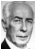

||ドイツ|オスカー・フォン・ヒンデンブルク| |none|33|国家元首|無能な凡人|ファシスト|1936年～| |none|141|情報大臣|政治分析の専門家|権威主義者|1936年～|引退なし| |略歴：大統領パウル・フォン・ヒンデンブルクの息子| ||ドイツ|テオドール・ホイス| |none|38|国家元首|不屈の改革者|社会保守派|1946年～| |none|71|外務大臣|小心な官吏|社会保守派|1946年～| |略歴：西ドイツの初代連邦大統領(1949年～1959年)|